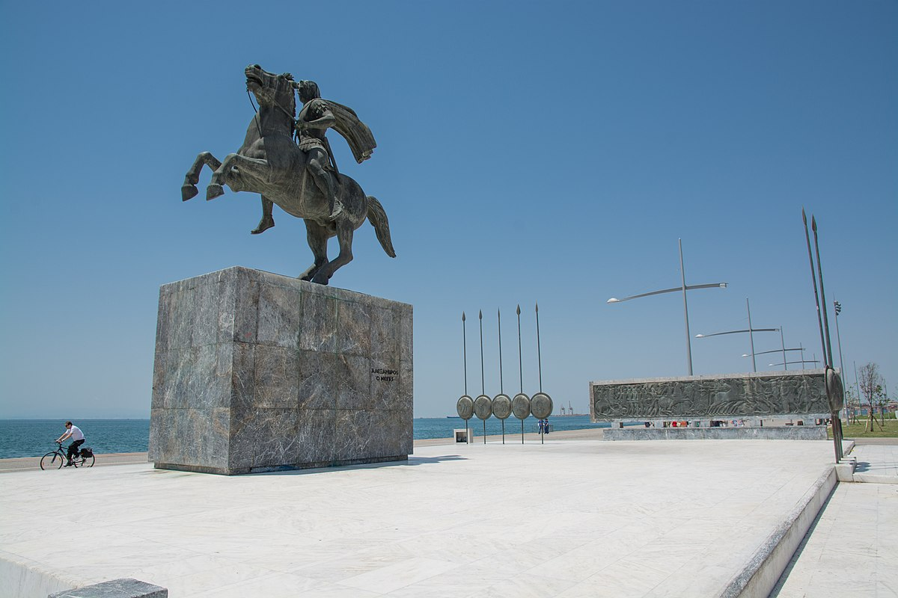
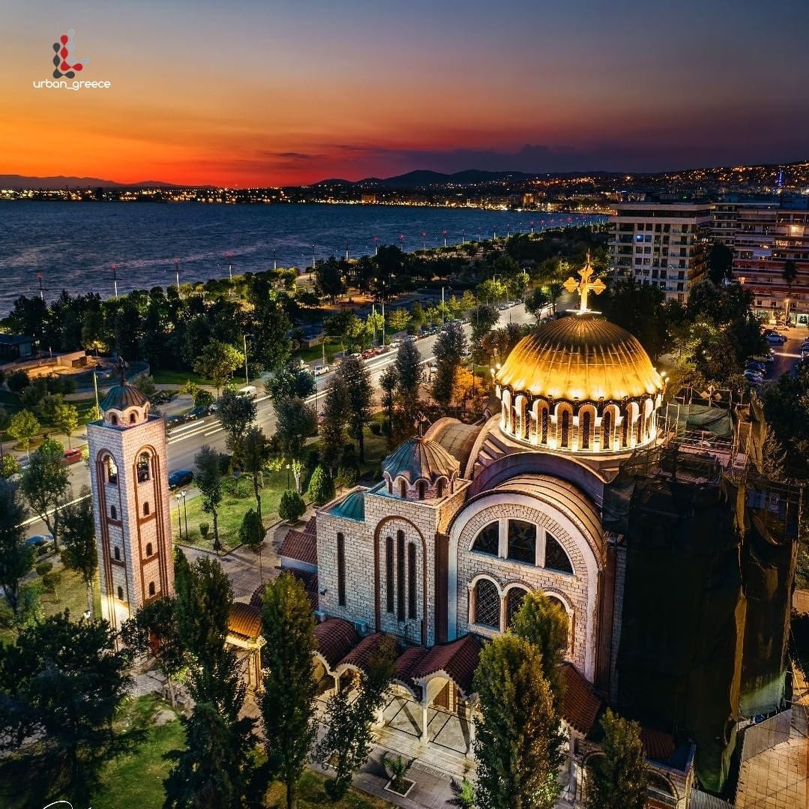
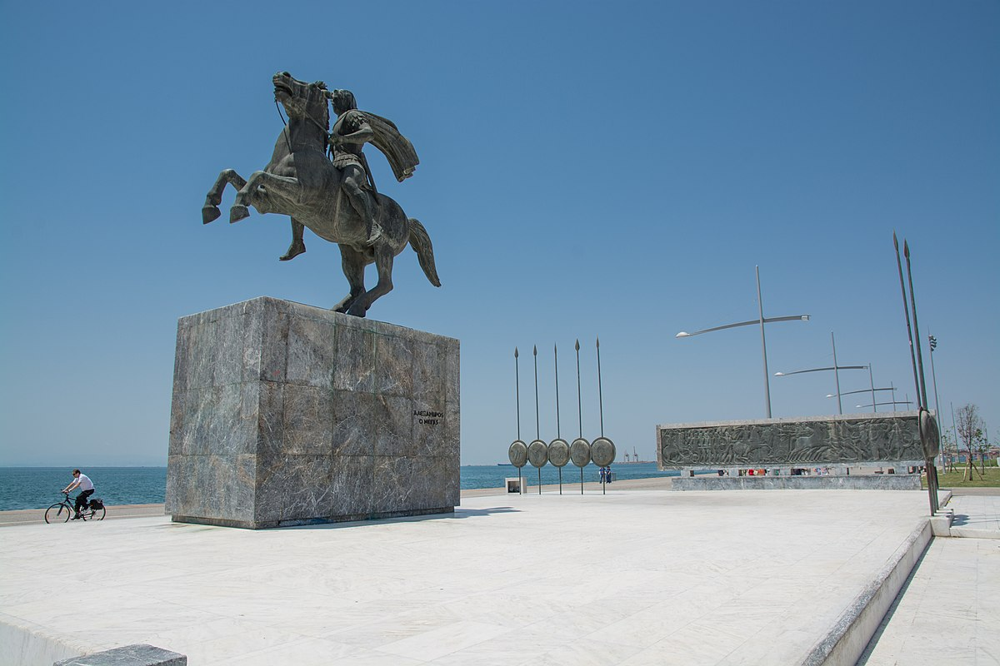
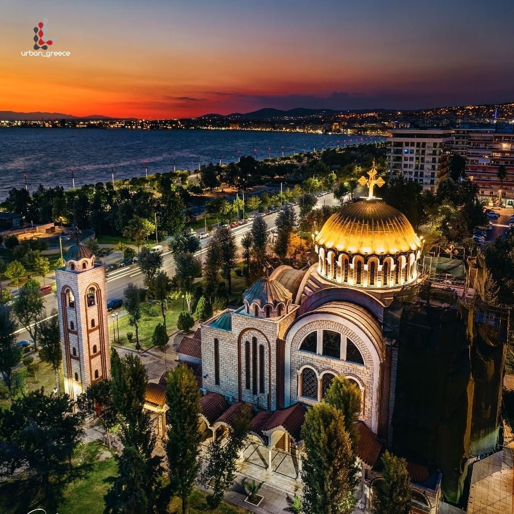

Η Θεσσαλονίκη είναι η μεγαλύτερη σε έκταση και πληθυσμό πόλη της Μακεδονίας, καθώς είναι και πρωτεύουσα της, και δεύτερη μεγαλύτερη στην Ελλάδα. Ο μόνιμος πληθυσμός του κεντρικού δήμου της Θεσσαλονίκης ανέρχεται σε 317.779 κατοίκους, και ο μόνιμος πληθυσμός της Περιφερειακής Ενότητας Θεσσαλονίκης ανέρχεται σε 1.092.919 κατοίκους.
Αποτελεί την πρωτεύουσα του Νομού Θεσσαλονίκης, την έδρα του Δήμου Θεσσαλονίκης και της μητροπολιτικής περιοχής της Θεσσαλονίκης, του πολεοδομικού συγκροτήματος Θεσσαλονίκης καθώς και την έδρα της Περιφέρειας Κεντρικής Μακεδονίας και της Αποκεντρωμένης Διοίκησης Μακεδονίας-Θράκης. Πολιούχος της πόλης είναι ο μεγαλομάρτυρας Άγιος Δημήτριος ο Μυροβλύτης. Είναι γνωστή επίσης ως Νύμφη του Θερμαϊκού αλλά και Συμπρωτεύουσα.
Ιδρύθηκε το 316 π.Χ. από τον Μακεδόνα στρατηγό Κάσσανδρο, που προερχόταν από τη Δυναστεία των Αντιπατριδών και ήταν ένας από τους διαδόχους του Μεγάλου Αλεξάνδρου, μαζί από τις προαναφερθείσες ψευδογραφίες στους πολέμους των Διαδόχων, ο οποίος της έδωσε το όνομα της συζύγου του και ετεροθαλούς αδελφής του Μεγάλου Αλεξάνδρου, Θεσσαλονίκης και προήλθε από τη συνένωση 26 πολιχνών και βρίσκονται γύρω από τον Θερμαϊκό κόλπο. Ο Κάσσανδρος υπήρξε διοικητής της Μακεδονίας κατά τη διάρκεια της εκστρατείας του Μεγάλου Αλεξάνδρου στην Ανατολή. Διαδραμάτισε σημαντικό ρόλο στην πολιτική ζωή της περιοχής μετά τον θάνατο του Μεγάλου Αλεξάνδρου και ανακηρύχθηκε βασιλιάς της Μακεδονίας το 300 π.Χ. Μετά την ίδρυση της πόλης, την οχύρωσε με τείχη τα οποία αποτρέπουν εχθρούς από το να την πολιορκήσουν, οι δε πρόσθετες βελτιώσεις των τειχών ανά τους αιώνες καθορίζουν την ποσοτικότητα της Θεσσαλονίκης μέχρι και σήμερα.